Turkey Swamp Park
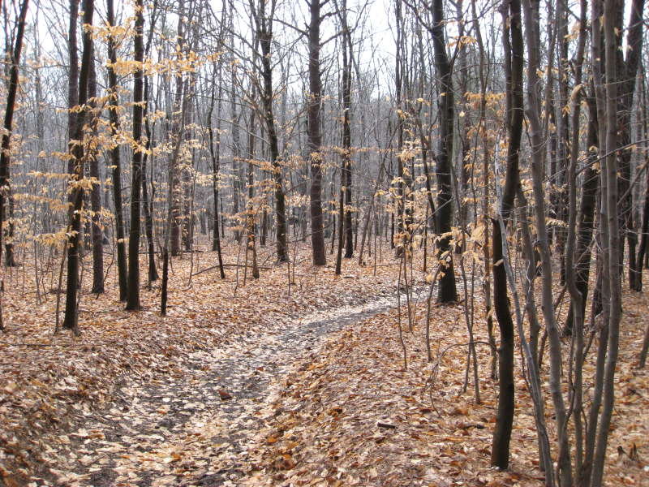
Our early-March Turkey Swamp Park hike started out with gently weaving leafy trails.
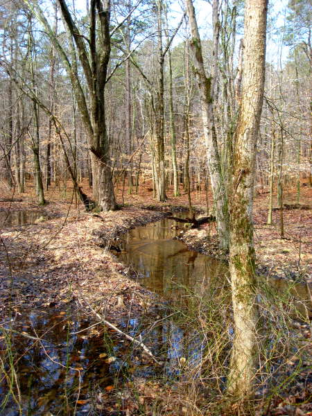
A small stream slips between the trees.
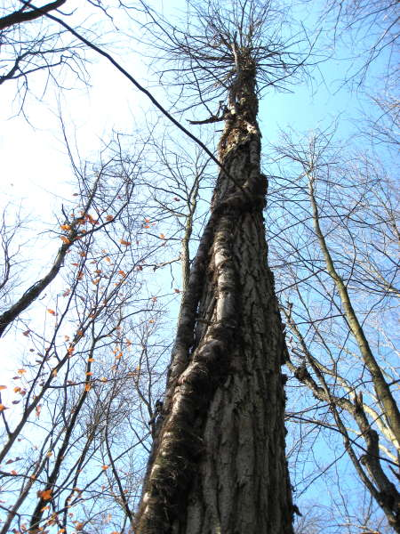
A poison ivy vine snakes up the trunk of a tree.
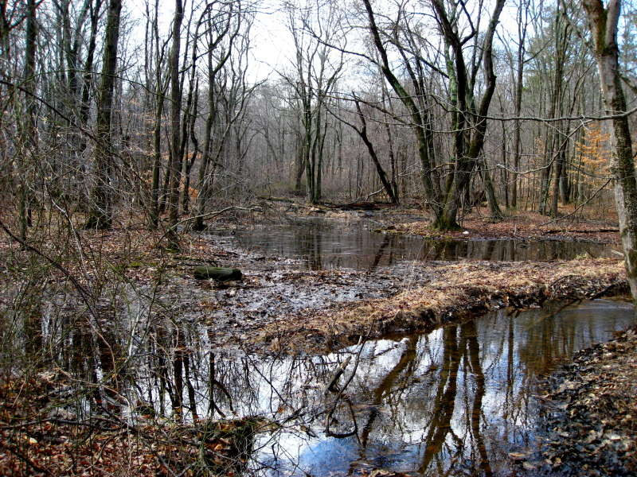
In a place called Turkey Swamp Park, swampy areas were no surprise.
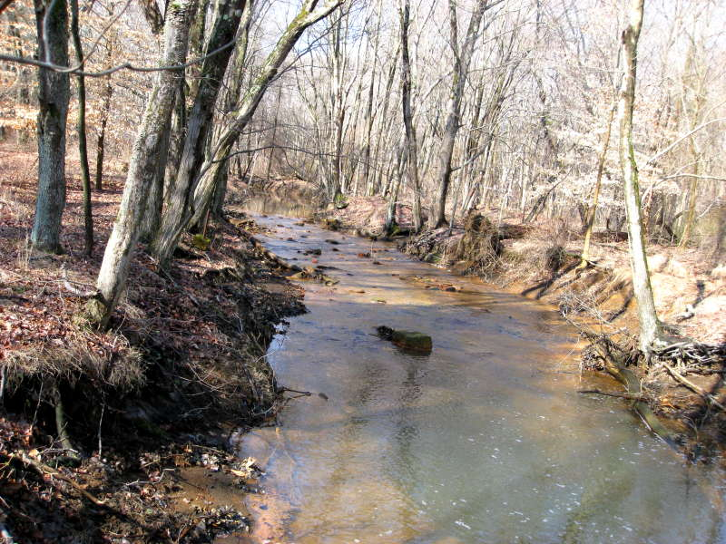
The stream widens, flowing around rocks.
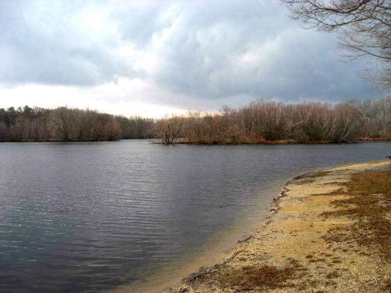
Turkey Swamp Park has an open lake you can explore in a canoe.
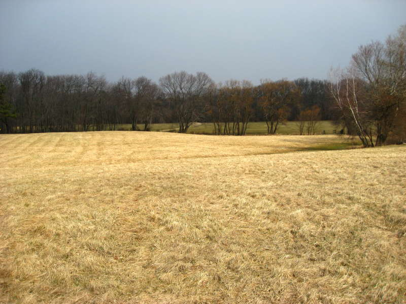
There are also grassy fields for tossing around a football, flying a kite, etc.
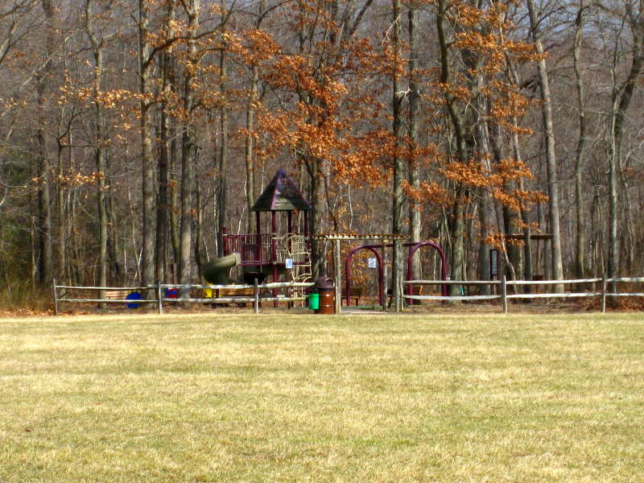
A colorful playground waits in the shadows of the trees.
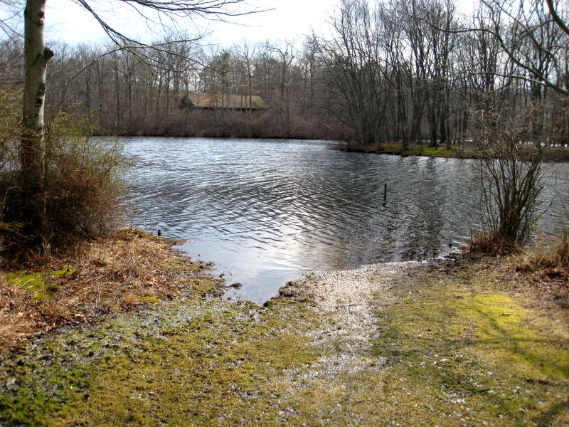
Across the lake a roof floats within the trees.
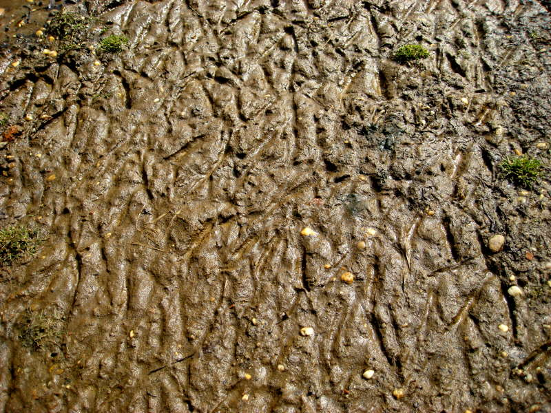
The mud leading up to the lake is scarred with a messy pattern of geese tracks.
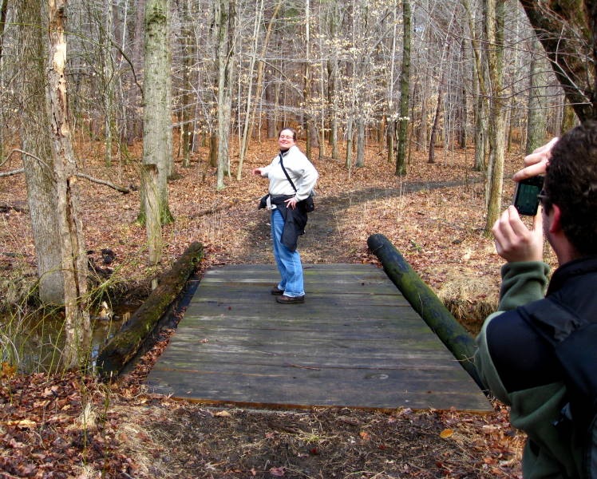
One friend poses on a bridge while another friend and I take pictures.
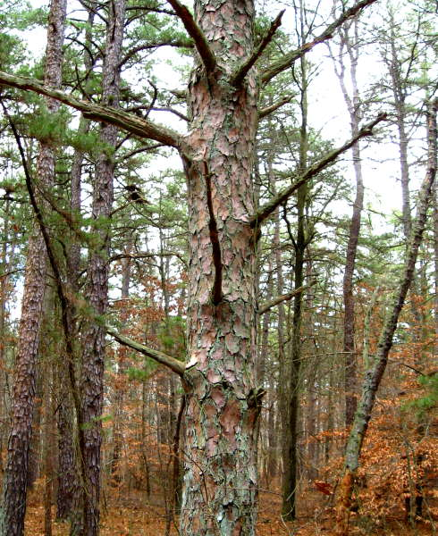
An interesting tree with reddish bark intermingled with a pale green fungus.
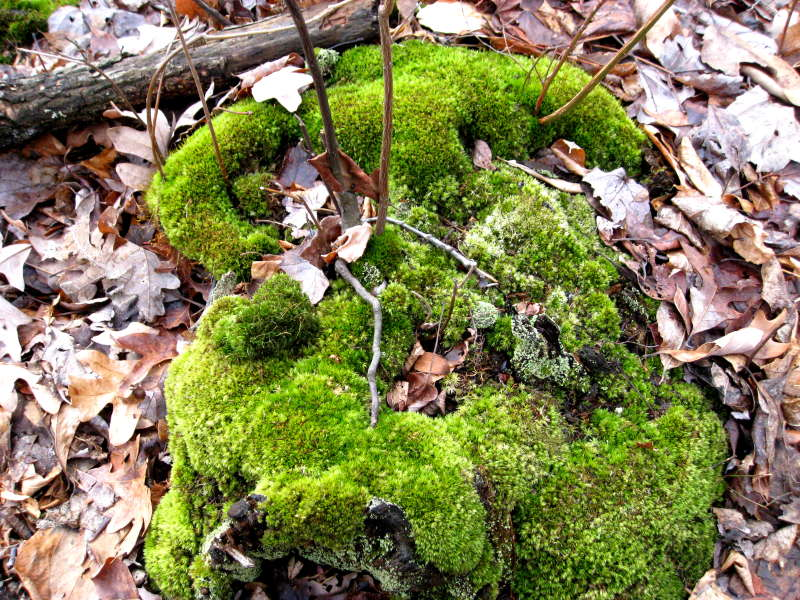
Bright green mossy patches sprout up randomly in the woods.
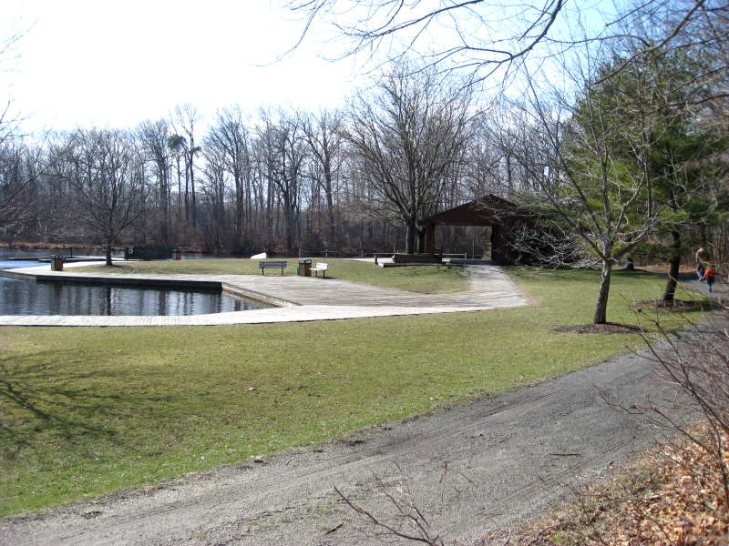
A wooden walkway lines the edge of the lake.
Back